Lonely Planet Destinations
Lead UX Designer - 2/2021 - 10/2021
Project Overview
Lonely Planet's highest trafficked pages are the destination pages. These detail info, attractions, and need to know info on cities, countries, continents, and neighborhoods around the globe.
Project Goal
Working with the brand design team, I set out to redesign the layout, visual look and feel, and components of Lonely Planet's destination pages. The goal was to provide a much more inspirational and useful way for our customers to learn about locations around the world, and help them plan their dream trips.
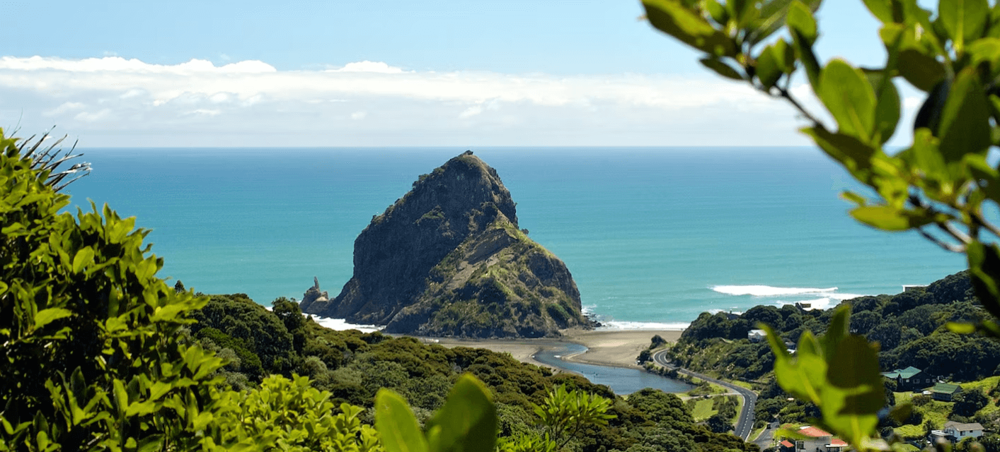
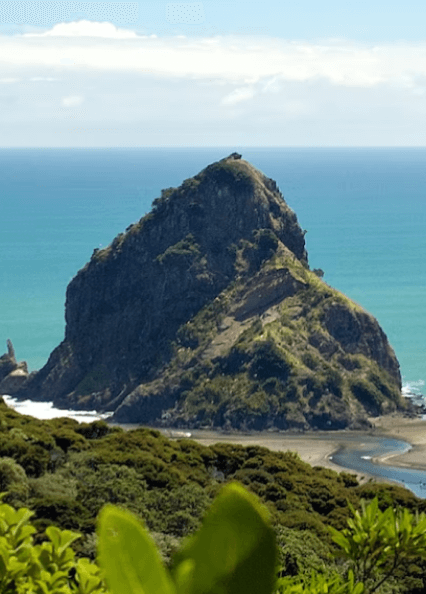
The problem
The existing destination page layout and design was a getting a bit dated. It was functional, in a basic sense, but it didn't really inspire our customers they way Lonely Planet should. We knew we needed to lean hard into our photography, and provide a more curated information flow for the page content. It was also imperative that we think about "max" and "min" states of these pages. A destination page like New York City would obviously have more content and info than the one for Topeka, Kansas. I needed to come up with a framework and plan for how to handle the various amount of content across our pages, while providing modular components to populate the content and information in a way that was intuitive and delightful for our customers.
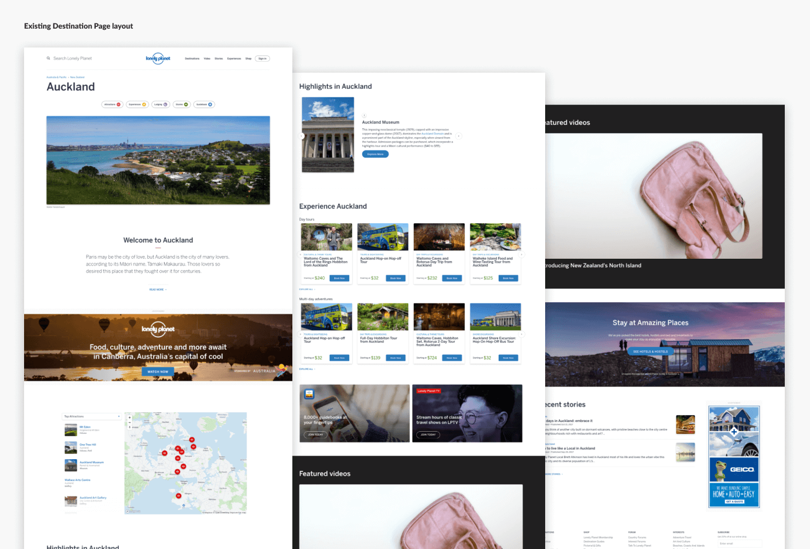
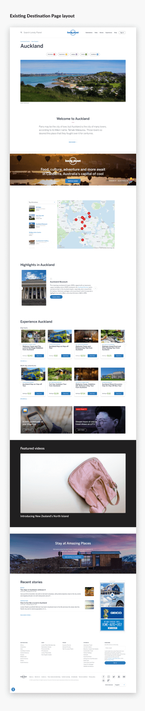
The framework
After many customer interviews and usability sessions on the existing site, we identified 5 distinct information zones in which to group the destination page content and components.
The goal was to tell a sort of narrative story about the destination based on our Information Architecture, and to do it in such a way that it was coherent from destinations with massive amounts of content all the way down to lesser known places with limited content to fill the page. This modular framework allowed us to begin planning at the component design level.
The goal was to tell a sort of narrative story about the destination based on our Information Architecture, and to do it in such a way that it was coherent from destinations with massive amounts of content all the way down to lesser known places with limited content to fill the page. This modular framework allowed us to begin planning at the component design level.
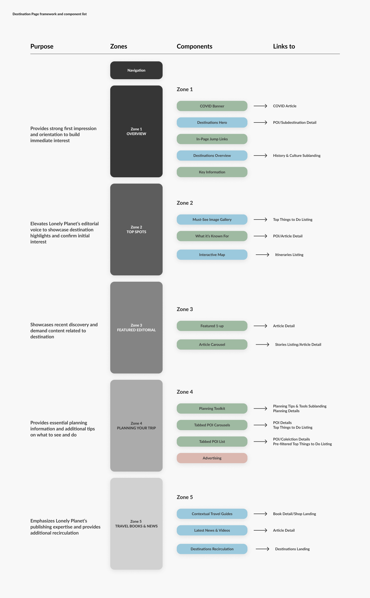
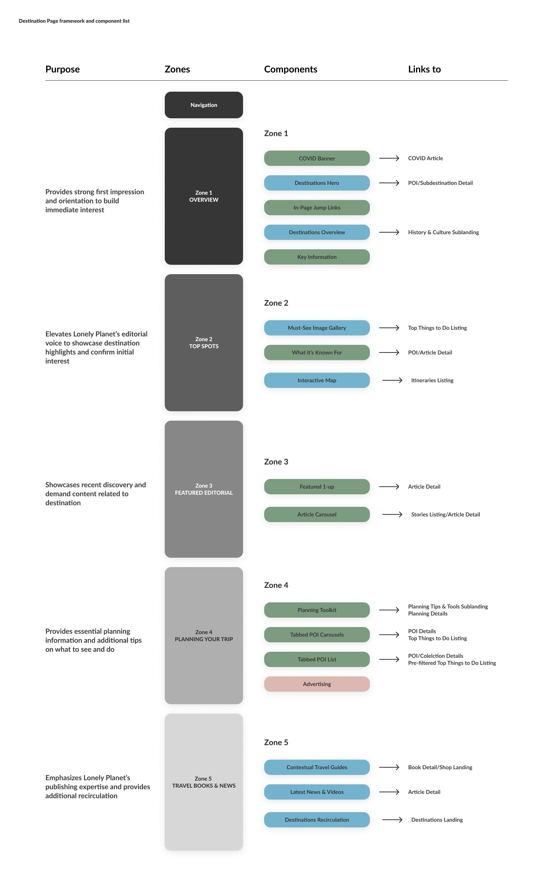
Featured Stories Component
Lonely Planet's writers are the lifeblood of the business. Without their inspiring and informative narrative content, Lonely Planet would not be who they are. I knew we needed to lean into our narrative voice, and I set out to design a featured stories showcase component to engage our readers and help inspire them to travel.
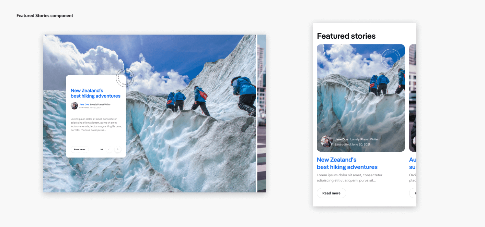
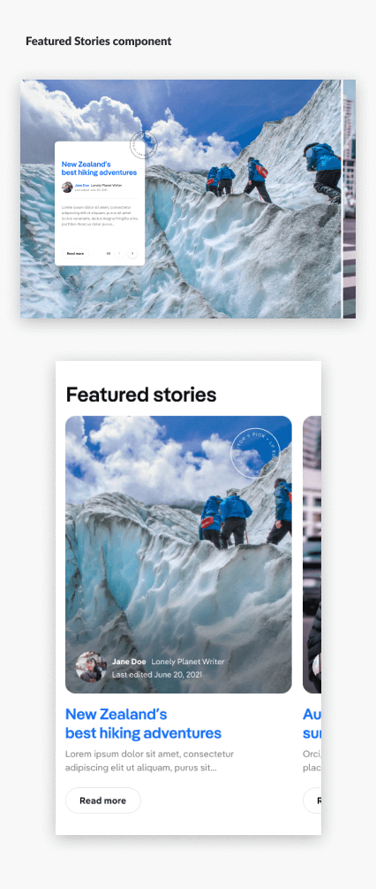
Interactive Map Component
I had previously redesigned our interactive map component a year or so prior to this project. We saw a huge uptick in engagement with it, and received lots of positive commentary from our customers after we launched it. I knew based on our usability testing that the mobile experience left a bit to be desired, and the look and feel of this component was not as friendly and engaging as we'd like it to be. By leveraging the brand redesign aesthetics, and doubling down on the mobile UI, I was able to drastically improve this map component, but making it much prettier, engaging, and useful for Lonely Planet's avid fanbase.
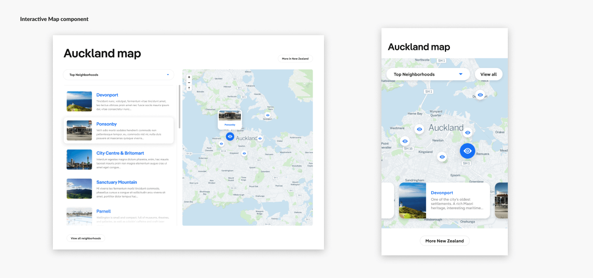
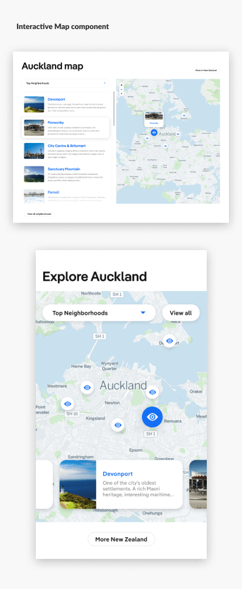
Planning Toolkit Component
One of the most popular sections of a Lonely Planet travel book is the "quick tips" section. This provides readers with quick access to essential information about a destination. Best times to go, local currency and costs, LGBTQ and accessibility travel concerns, and more. I was inspired by the children's card game "Memory", and set out to use a card flip aesthetic to make this component engaging, fun, and memorable.
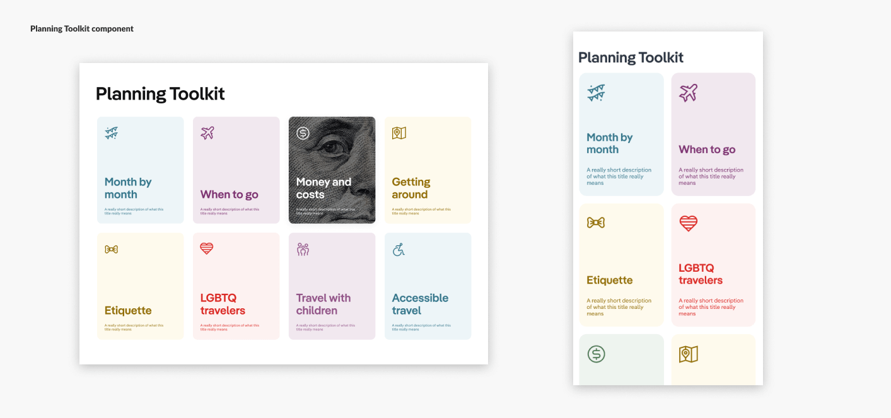
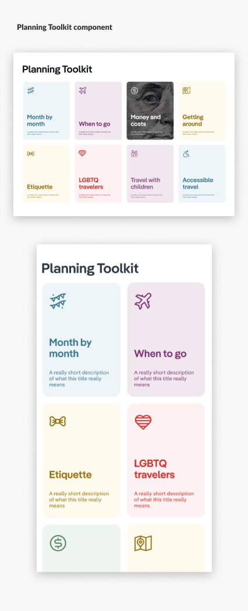
The solution
The final redesign ended up leveraging a modular menu of 17 different components which could be added or subtracted to the designated zones of a destination page depending on the content scope or needs of our website editors. We leveraged the new Lonely Planet branding and design aesthetic to create an immersive and engaging experience with the goal of educating and inspiring our customers to help them plan for the trip of their dreams.
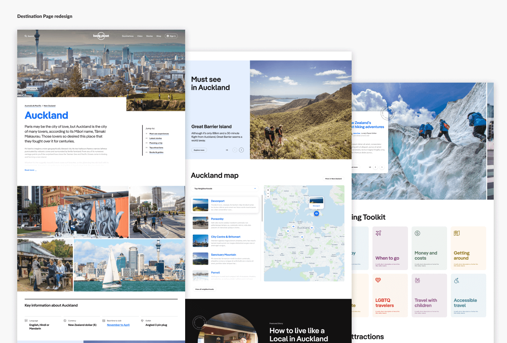
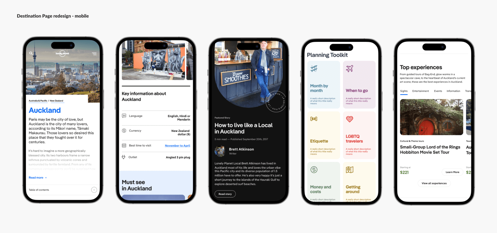
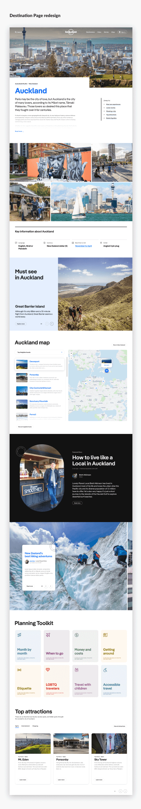
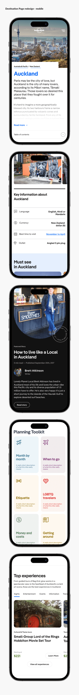